Kajana's Gps
Hi, My name is Kajana James and this is my Cornerstone Experencience GPS Project.
My class take place in N206 on Monday and Wednesday from 3:00pm-4:20pm with Professor Sharron Hill.
Presentation Content

Visited the Help Center
2 minutes

Academic Advising
2 minutes
Academic Support
2 minutes
OBAC Event
2 minutes
Other events I attended
2 minutesBlog Post
Professor or Professional Visit
On August 25, 2021, I visited the Help Center and spoke to Fred about becoming a Robotics Software Developer.
I enjoy the meeting, as he was very helpful in recommending clubs, I should participate in such as the cybersecurity club or joining a boot camp- to learn various back-end or front-end programming language.
Nevertheless, he recommend two professor class I must take for programming which are Roger Webster and Melinda Lynys. Furthermore we talk about how one semicolon can ruining someone life when coding! Visit the Help Center on August 25,2021
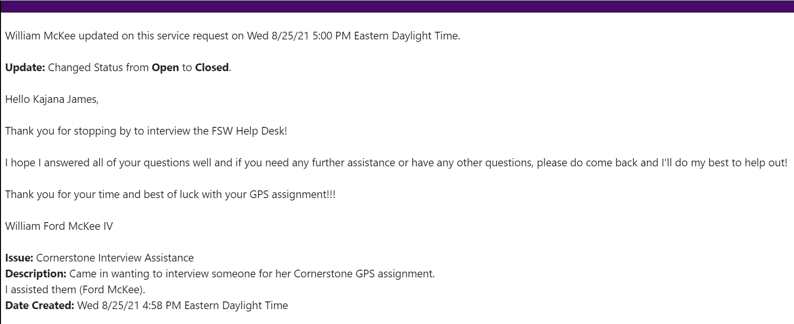
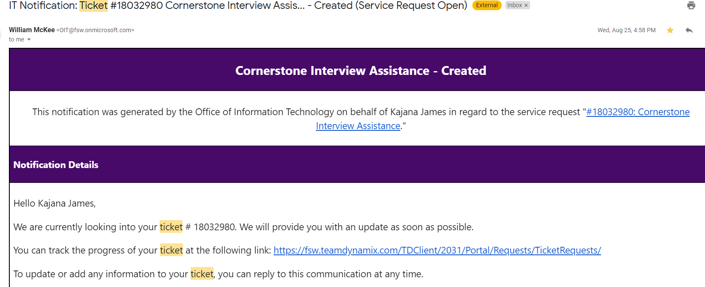
Workshops
A workshop is a way in which a new concept is introduce or where information is given.
Workshop #1- Inclusive Google Drive Features- September 21,2021
Google Drive Workshop with Steven Bianco
I attend a Google Drive Workshop via zoom which was host by Steven Bianco. I learn a few tips such as adding speaker notes in a powerpoint presentation as well as the speech-to-text feature that google drive has. I find this workshop to be very informative and education as I was giving alot of information I will be able to use to eleavate my powerpoint presenation.Additionally I was given steps on how to access my prenium grammarly accounnt as well as microsoft office.
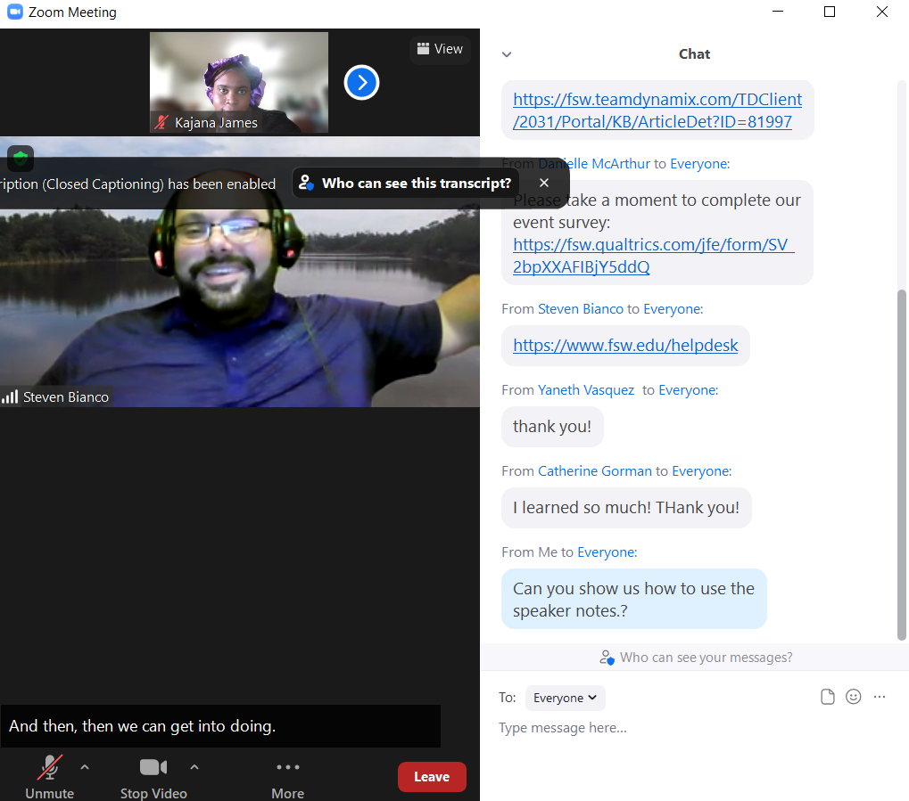
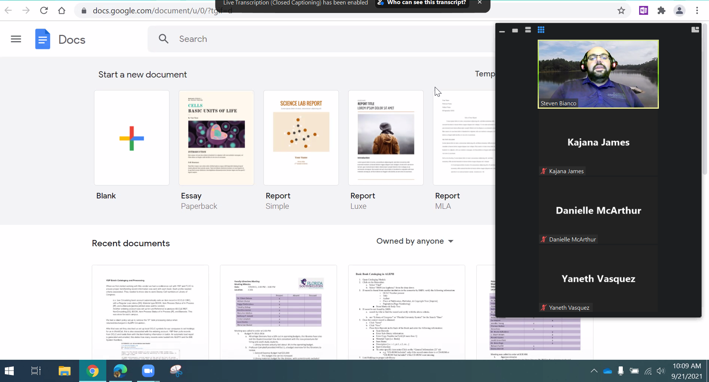
Workshop #2-Be the Change Workshop- September 22,2021
Be the Change Workshop with Linda Johnsen
On Wednesday I attend a workshop about change. I learn how change occur and how I can start movement about anything I am passionate about. However, in order to start I must research about my topic from reliable and crediable source. I must talk to someone and be willing to see if they would like to know more a topic. If they say no, I should not take that a failure but a reflectin to see where I went wrong so that I will be able to to better myself as a advocate.
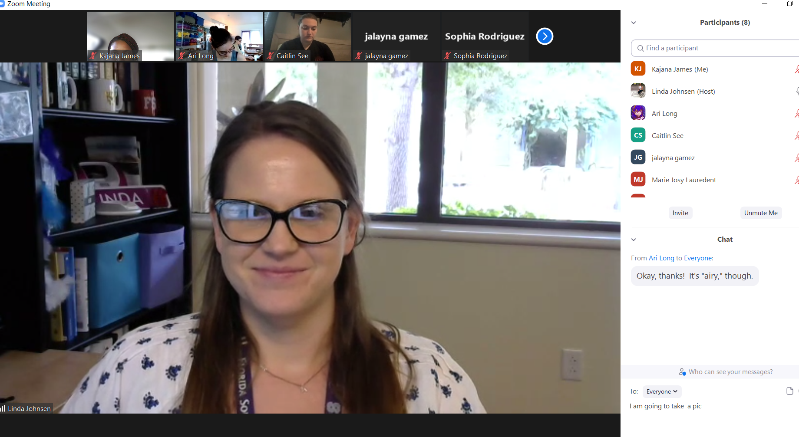

Be the Change Workshop with Linda Johnsen
On Wednesday I attend a workshop about change. I learn how change occur and how I can start movement about anything I am passionate about. However, in order to start I must research about my topic from reliable and crediable source. I must talk to someone and be willing to see if they would like to know more a topic. If they say no, I should not take that a failure but a reflectin to see where I went wrong so that I will be able to to better myself as a advocate.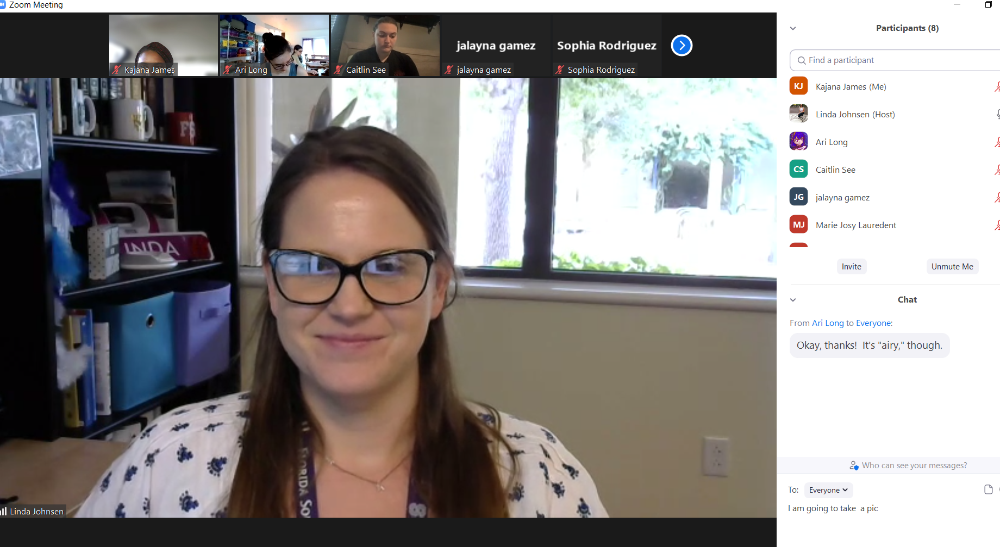
Advising meeting with Christoper Renda on September 1,2021
I had finally met my advisor and put a face to the voice I had heard prior to weeks before. We discuss steps in going further as well as taking all my spring courses and prequiste course by the end of first year. We also complete a degree map to ensure I will be graduting with both of my degrees by the end of my three year tenor. As well as class I will be required to take to ensure they are transferrable and all my college credit will be accounted for. With both of my degrees I will be able to transfer to FSU or FGCU at the junior level. My advisor is the best!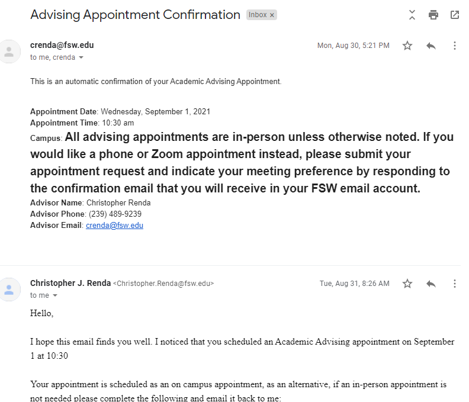

Accademic Support Center- Math and Writing
On Monday, August 30,2021 I visit both centers.
Writing Center: On Monday, I visit the writing center and Alisha gave me tips and tricks on how to concise my writing and organizing my thoughts as well how to properly cite my sources. She taught me my favorite quote was not only a quote but its from a poem too. I would like to thank all the amazing persons who work at the writing center for their assistance in helping me grow as a person as well developing my writing skills. If you would like to help with the writing center Click here Click Here Math Center: In the math center, I met Eva who I am now good friends with. I go to the math center immediately after my Algebra class to study and complete my math assignments. They also provide study sheets, worksheets and material to assist in any math topic. I find going to the math center is therapeutic I do not know to explain it. If you would like to get help with a math topic click here Click here Or you can scan the QR code below!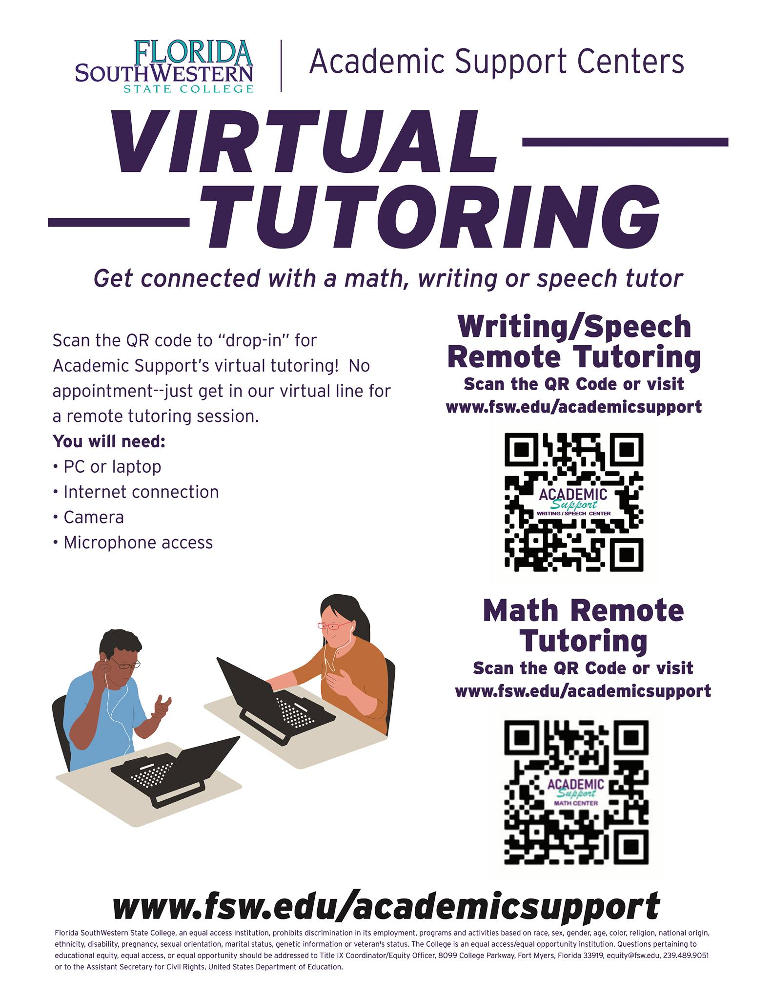
OBOC Event- August 31,2021
One book One College Launch
The launch of the One Book, One College began on Tuesday with a Sustainability Fair,a plant-based food sampling and a dicsusion abut the book A Life on Our Planet by Davis Attebborough.
At the Sustaibailuty Fair we learn about some of the various club the school offer such as book club and sustainabily club.
I was intriguded by the Opossum that the CROW (Clinic for the Rehabition of Wildlife) representative had. This is my first time seeing one in real life.
I learn from the ECHO orgaization that I can purify water by taking some Moringa Seeds and crushed it with a mortar,
stir it into the water and let it sit for a few hours.
The imputities will settle to the bottom and the top will contain the clean water.
Click here to see a youtube video on water purfication Water Purfication Additionally, They have a farm tour which contains Ackee which is poisnous plant
if not handle properly but it is my favourite food.
Click here to see a picture of ackee Picture of Ackee
Part Two
I attend the discusion aspect of the day by going to a presentation by Micheal Suey. I learn that the voice I know but never seen a face was indeed Davis Attebborough. From the discusion I come to a relization that if I want a future legacy then I must start with me. I can start by reducing my meat intake as well start a hydrophonic garden. This event encourges students to read the book by telling us we are not savig our planets but we are saving ourselves. For my professional studies this motivates me to do better in school so that one that I can develop a software programme to help reduce global warming by either watering plants or help migrate organisms when the temputure is getting higher/lower than usually.

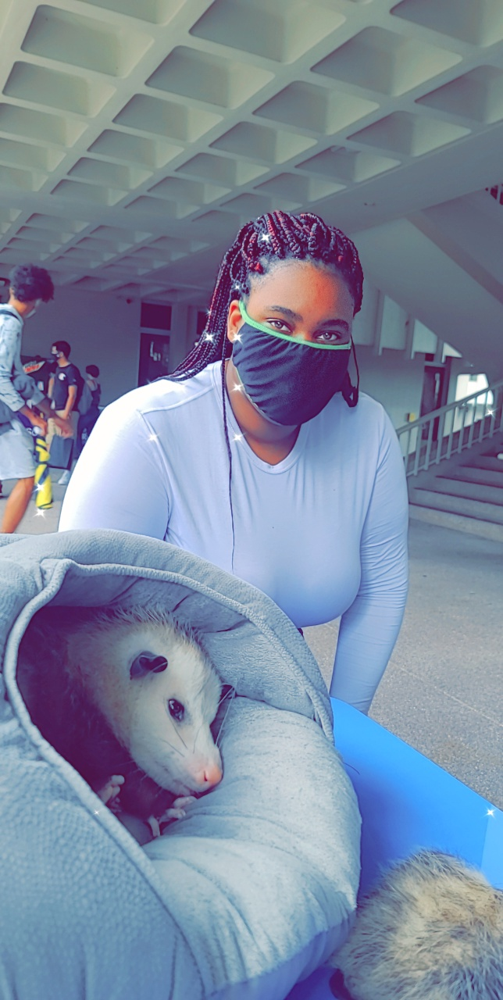
Peer Tutor Service- September 3 & September 22,2021
I use the peer tutoring as a way of "cementing" topic that I am not grasping fully. On September 3,2021 I met with Nicolas Ramos via zoom with my College Alegbra class and with Phynx Yamaguchi via zoom for my Statics class. I really enjoy one on time with these students are they are very patience when I ask redicules question. I really enjoy this service the college provides. Click here 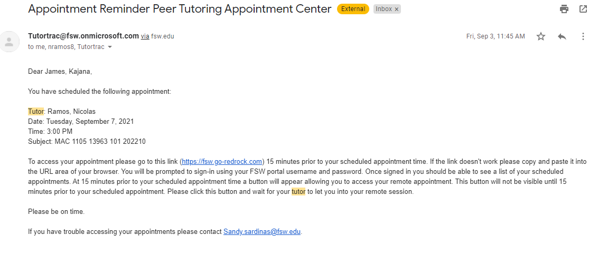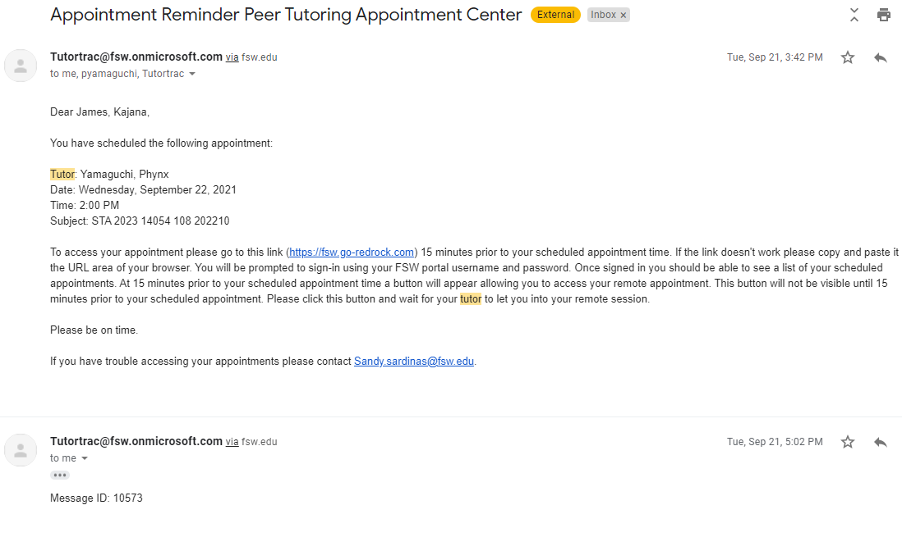
Constuition Week Bingo on September 14,2021
I attend the I attend the Constuition day bingo in which I won a $10 gift. As an international student my US government and history knowledge is limited. However, I learned 75 facts about the constuitiin from Justine Shuey. Currently, I remember a few such as the charter of freedom consists of The Bill of Rights,The constuition and Decelation of Independance. Additionally, I learn the Bill of Rights is called the Ten Ammendants. 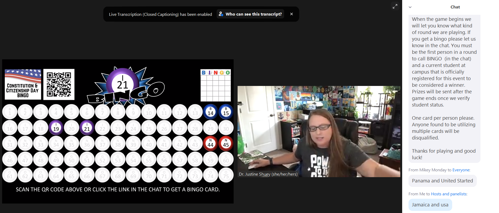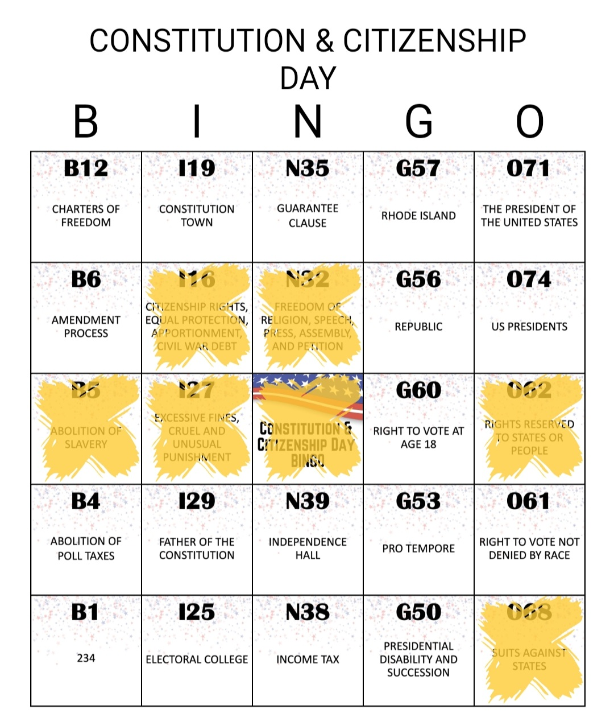
Library Service- September 15,2021
On Wednesday I book a study room for 2 hours. In the first hour I summarize points I want to include in my upcoming essay which is due on September 23,2021. The last hour I spend typing up a draft of my website. Having a room all for myself is a luxury and something I will be ultize once a week for the rest of my tener for school. If you would like to book a study room here is a link to book one. Click Here 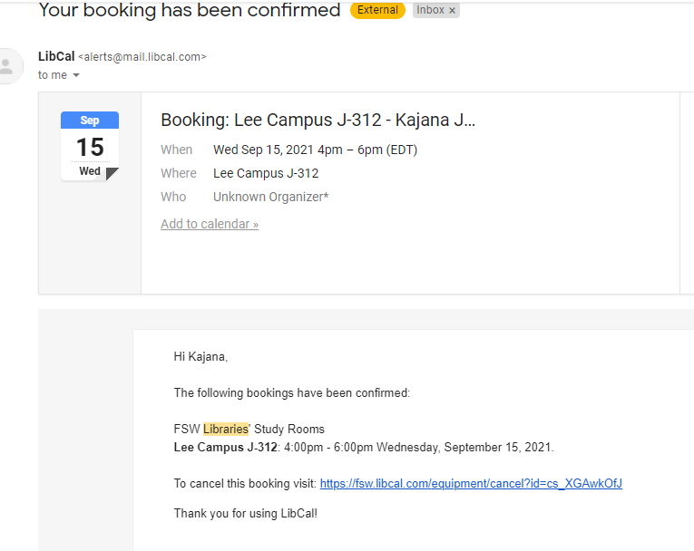
Navigating Student Aid - September 17,2021
On Friday I attended a finacial aid event where I learn how I can finace college as well the differnt aids availabe to me. As a student who is saving to up to taking my first Actuary exam in my last year of university, I need to know how I can afford it. My first exam will consist about $1200 and I am not planning on paying for out of pocket rather with schoolarships andgrants. NO LOANS!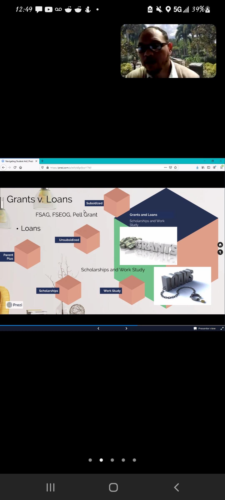
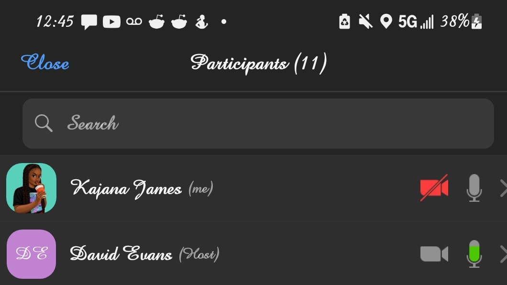
Live Beyond the Weekend Workshop
As a college student I find it difficult to save due to the increase of bills. However after attending this workshop I am working on going back to the earn, save and then spend cycle innstead of the earn, spend, cycle. I am very pleased with this workshop as it did gave me the motiavition to get a budget app to track where is my money going.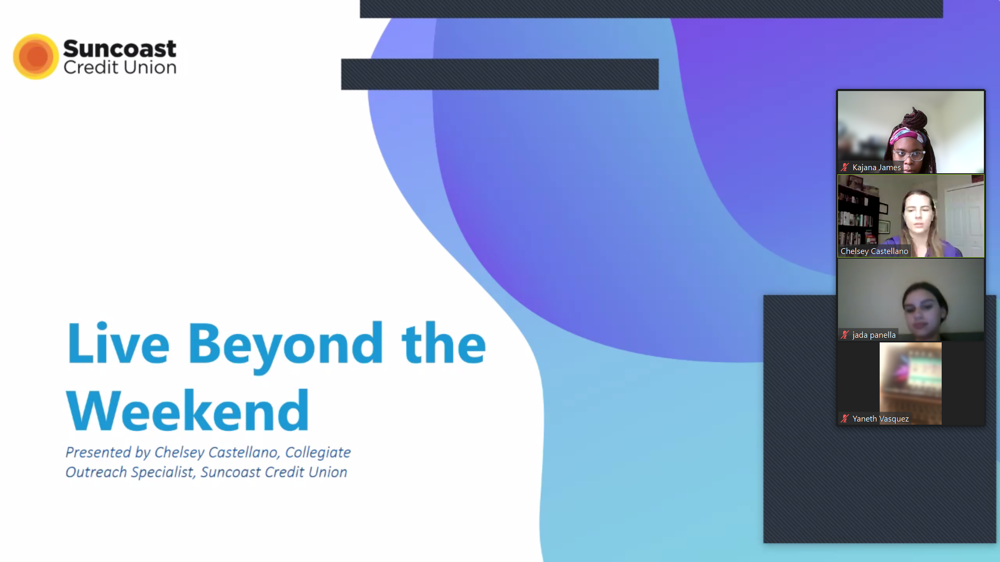